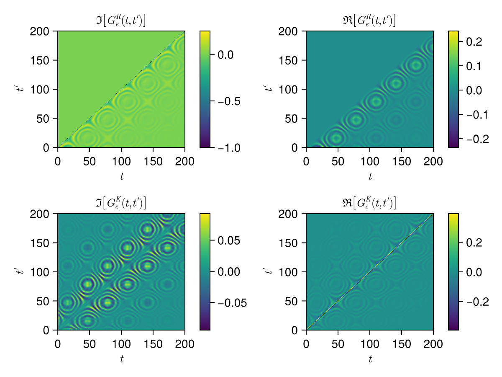
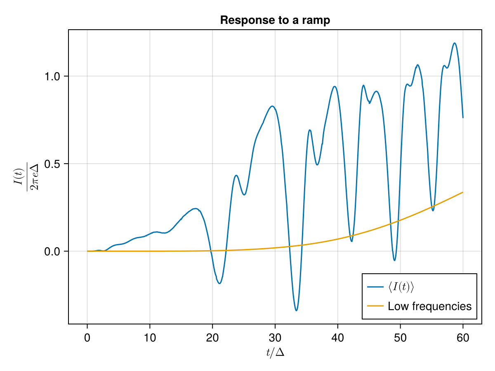

Superconductor - Quantum Dot - Superconductor junction
We consider a junction formed by a quantum dot connected to two superconducting leads (BCS with uniform order parameter $\Delta_l$). Through a unitary transformation the tunnel couplings absorb the order parameter phases, and the Hamiltonian reads as in the metal case, with the superconducting pairing terms in $H_L$.
We work in Nambu space, so every kernel returns a 2×2 block (block size bs = 2), built from the Pauli matrices $\sigma_0, \sigma_x, \sigma_z$.
The retarded lead Green function is the BCS equilibrium one; on the time axis it is the sum of a $\delta$ contribution and a smooth Bessel kernel:
\[g^R_l(t,t') = -i\sigma_0 \delta(t-t') + \Theta(t-t')\left[ \Delta \, J_0(\Delta(t-t')) \, \sigma_x + i\Delta \, J_1(\Delta(t-t')) \, \sigma_0 \right].\]
The Dyson equation is solved exactly as for the metal case, with the dot Green function
\[g^R(t,t') = -ie^{-\eta(t-t')} \sigma_0\]
dressed by the lead self-energies $\Sigma_l = \mathcal T_l^\dagger g_l \mathcal T_l$ with an apodized coupling $\mathcal T_l(t) = \sqrt{\Gamma_l/2}\, e^{i\sigma_z\phi_l(t)/2}\sigma_z$.
using NonEquilibriumGreenFunction
using LinearAlgebra
using SpecialFunctions: besselj0, besselj1
using StaticArrays
using CairoMakie
using LaTeXStrings
#HssMatrices does not benefit from the use of multithreading BLAS.
BLAS.set_num_threads(1)Parameters
struct Parameters
δt::Float64
T::Float64
Γl::Float64
Γr::Float64
β::Float64
Δ::Float64
ϕl
ϕr
η
end
#The leafsize should be adapted to the problem at hand.
default_compression() = HssCompression(leafsize=64)
function Parameters(; δt, T, Γl=1, Γr=1, β=1000, Δ=1.0, ϕl, ϕr, η=0)
return Parameters(δt, T, Γl, Γr, β, Δ, ϕl, ϕr, η)
end
axis(p::Parameters) = 0:p.δt:p.T
σ0() = @SMatrix [1.0 0.0; 0.0 1.0]
σx() = @SMatrix [0 1.0; 1.0 0.0]
σz() = @SMatrix [1.0 0.0; 0.0 -1.0]σz (generic function with 1 method)Retarded branch
The first step is to evaluate the leads Green function, which is made of a $\delta$ part and a smooth one. A generic matrix can be compressed in $O(N^2)$ operations and $O(N)$ memory using stochastic algorithms. The cost reduces to $O(N)$ for instantaneous operators and to $O(N\log N)$ in both time and space for stationary operators — hence the Stationary map below.
function compute_retarded_lead_green_function(p::Parameters; cpr=default_compression())
g_R_lead_delta = LocalKernel(axis(p), t -> -1im * σ0(), compression=cpr)
g_R_lead_continuous = RetardedKernel(axis(p),
Stationary(τ -> (p.Δ * besselj0(p.Δ * τ) * σx() + 1im * p.Δ * besselj1(p.Δ * τ) * σ0())),
compression=cpr)
g_lead = g_R_lead_delta + g_R_lead_continuous
endcompute_retarded_lead_green_function (generic function with 1 method)We can now solve the retarded Dyson equation.
function compute_GR(p::Parameters; cpr=default_compression())
g_R_lead = compute_retarded_lead_green_function(p; cpr=cpr)
apodisation(t) = (1 - exp(-(t / 2)^2))
coupling_left = LocalKernel(axis(p),
t -> apodisation(t) * sqrt(p.Γl / 2) * exp(1im * σz() * p.ϕl(t) / 2) * σz(), compression=cpr)
coupling_right = LocalKernel(axis(p),
t -> apodisation(t) * sqrt(p.Γr / 2) * exp(1im * σz() * p.ϕr(t) / 2) * σz(), compression=cpr)
Σ_R_left = coupling_left' * g_R_lead * coupling_left
Σ_R_right = coupling_right' * g_R_lead * coupling_right
Σ_R = Σ_R_left + Σ_R_right
g = RetardedKernel(axis(p),
Stationary(τ -> -1im * exp(-p.η * τ) * σ0()),
compression=cpr)
G_R = solve_dyson(g, g * Σ_R)
return (; g_R_lead, g, G_R, Σ_R_left, Σ_R, coupling_left, coupling_right)
endcompute_GR (generic function with 1 method)Kinetic branch
With the retarded solution at hand we can solve the whole Dyson equation.
function simulate_junction(p::Parameters; cpr=default_compression())
results_GR = compute_GR(p; cpr=cpr)
g_R_lead = results_GR[:g_R_lead]
coupling_left = results_GR[:coupling_left]
coupling_right = results_GR[:coupling_right]
G_R = results_GR[:G_R]
ρ = AcausalKernel(axis(p),
Stationary(τ -> thermal_kernel(τ, p.β) * σ0() .|> ComplexF64),
compression=cpr)
g_lead_kinetic = g_R_lead * ρ - ρ * g_R_lead'
g = results_GR[:g]
g_dot_kinetic = g * ρ - ρ * g'
compress!(g_dot_kinetic)
Σ_K_left = coupling_left' * g_lead_kinetic * coupling_left
Σ_K_right = coupling_right' * g_lead_kinetic * coupling_right
Σ_K = Σ_K_left + Σ_K_right
G_K = G_R * Σ_K * G_R'
return (; results_GR..., G_K, Σ_K_left, Σ_K_right)
endsimulate_junction (generic function with 1 method)Observables
With some post-processing, we can extract the value of any observable, here the current. The trace over the Keldysh space is taken by hand, pairing the Nambu components of the diagonal.
function compute_average_current(results)
function f(G_R, G_K, Σ_R, Σ_K)
_Σ_R_time_G_R = Threads.@spawn Σ_R * G_R
_G_R_time_Σ_R = Threads.@spawn G_R * Σ_R
_G_R_time_Σ_K = Threads.@spawn G_R * Σ_K
_G_K_time_adjoint_Σ_R = Threads.@spawn G_K * adjoint(Σ_R)
_Σ_K_time_adjoint_G_R = Threads.@spawn Σ_K * adjoint(G_R)
_Σ_R_time_G_K = Threads.@spawn Σ_R * G_K
Σ_R_time_G_R = fetch(_Σ_R_time_G_R)
G_R_time_Σ_R = fetch(_G_R_time_Σ_R)
G_R_time_Σ_K = fetch(_G_R_time_Σ_K)
G_K_time_adjoint_Σ_R = fetch(_G_K_time_adjoint_Σ_R)
Σ_K_time_adjoint_G_R = fetch(_Σ_K_time_adjoint_G_R)
Σ_R_time_G_K = fetch(_Σ_R_time_G_K)
return -((1 // 2) * ((adjoint(Σ_R_time_G_R)) - Σ_R_time_G_R) + G_R_time_Σ_K +
G_K_time_adjoint_Σ_R + -(Σ_K_time_adjoint_G_R + Σ_R_time_G_K) +
(3 // 2) * (G_R_time_Σ_R - adjoint(G_R_time_Σ_R)))
end
I_avr_op = f(results[:G_R], results[:G_K], results[:Σ_R_left], results[:Σ_K_left])
dg = diag(matrix(I_avr_op))
(dg[1:2:end] .- dg[2:2:end])
endcompute_average_current (generic function with 1 method)Simulations
We run a few simulations. The CI builds a reduced version of this script; the committed figures (examples/*.svg) show the full-scale results.
V = 0.2
Γ = 5
p = Parameters(δt=0.2, T=200, ϕl=t -> 0, ϕr=t -> V * t, Δ=1, Γl=Γ, Γr=Γ, β=100, η=0);
println("N = $(axis(p) |> length)")
results = simulate_junction(p)
compute_average_current(results);N = 1001
The electron (hole) components of the Green functions:
function plot_results_maps_electron(results)
f = Figure()
f_ax = Axis(f[1, 1], title=L" \Im \left[ G^R_e(t,t')\right]", xlabel=L"t", ylabel=L"t'")
G_R = matrix(results[:G_R])[1:2:end, 1:2:end]
ax = axis(p) |> collect
hm = heatmap!(f_ax, ax, ax, imag.(G_R))
Colorbar(f[1, 2], hm)
f_ax = Axis(f[1, 3], title=L"\Re \left[ G^R_e(t,t')\right]", xlabel=L"t", ylabel=L"t'")
hm = heatmap!(f_ax, ax, ax, real.(G_R))
Colorbar(f[1, 4], hm)
f_ax = Axis(f[2, 1], title=L" \Im \left[ G^K_e(t,t')\right]", xlabel=L"t", ylabel=L"t'")
G_K = matrix(results[:G_K])[1:2:end, 1:2:end]
hm = heatmap!(f_ax, ax, ax, imag.(G_K))
Colorbar(f[2, 2], hm)
f_ax = Axis(f[2, 3], title=L"\Re \left[ G^K_e(t,t')\right]", xlabel=L"t", ylabel=L"t'")
hm = heatmap!(f_ax, ax, ax, real.(G_K))
Colorbar(f[2, 4], hm)
f
endplot_results_maps_electron (generic function with 1 method)The full simulation ($N > 2000$) is skipped in CI to bound the memory usage.
if length(axis(p)) < 2001
plot_results_maps_electron(results)
end
Transient current under a voltage ramp
The response to a bias ramp $\delta\phi(t) = V t^2/(2T_{max})$ applied symmetrically to both leads:
CI reduces the simulation length; the committed figure (examples/transientcurrentSQDS.svg) shows the full-scale ramp.
Tmax = haskey(ENV, "CI") ? 60 : 600
V = 1.2
Γ = 5
δt = 0.05
δϕ(t) = V / Tmax * t^2 / 2
p = Parameters(δt=δt, T=Tmax, ϕl=t -> -δϕ(t) / 2, ϕr=t -> δϕ(t) / 2,
Δ=1, Γl=Γ, Γr=0.5 * Γ, β=1000, η=0);
println("N = $(axis(p) |> length)")
results = simulate_junction(p)
Idc = compute_average_current(results);N = 1201
The low-frequency component is extracted with a Butterworth filter.
using DSP
zpk = digitalfilter(Lowpass(0.1 / 2π; fs=1 / p.δt), Butterworth(5))
f = Figure()
Axis(f[1, 1], title="Response to a ramp", xlabel=L" t / \Delta", ylabel=L"\frac{I(t)}{2\pi e \Delta}")
lines!(axis(p), real.(Idc), label=L"\langle I(t)\rangle")
lines!(axis(p), filt(zpk, real.(Idc)), label="Low frequencies")
axislegend(position=:rb)
save(joinpath(@__DIR__, "transient_current_SQDS.svg"), f)
f